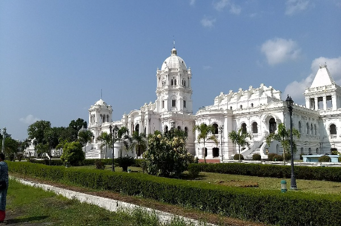
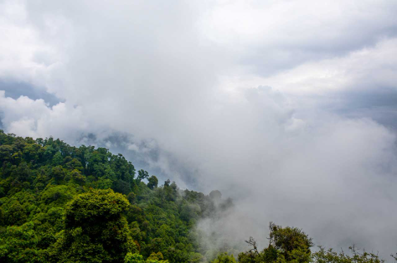
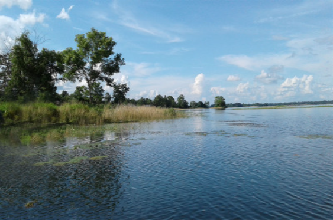

Tripura Government Museum

The Tripura Government Museum, located in Agartala, is a cultural repository showcasing the rich history and heritage of the northeastern state of Tripura. Established to preserve and exhibit the region's diverse cultural artifacts, the museum provides visitors with insights into the traditions, art, and lifestyle of the indigenous communities. The museum's collection includes archaeological finds, traditional textiles, tribal handicrafts, and ancient sculptures.
The exhibits at Tripura Government Museum highlight the state's historical evolution, from its tribal roots to its princely past and contemporary life. The museum's emphasis on tribal culture and artifacts contributes to a deeper understanding of Tripura's socio-cultural landscape. Open to the public, the museum serves as an educational hub, promoting awareness and appreciation of Tripura's unique cultural heritage.
Jampui Hills

Jampui Hills, nestled in the North Tripura district of Tripura, India, is a captivating hill station renowned for its scenic beauty and pleasant climate. The highest peak, Betlingchhip, offers panoramic views of Bangladesh plains. Jampui is famous for its orange orchards, and the Orange Festival celebrates the region's citrus produce. The hills are inhabited by the Mizo tribal community, and visitors can experience their vibrant culture and traditions.
The tranquil ambiance, lush green landscapes, and charming villages make Jampui Hills a sought-after destination for nature lovers and those seeking a peaceful retreat. The region's unique blend of natural beauty and cultural diversity adds to the allure of Jampui Hills as a captivating hill station in the northeastern part of India.
Dumboor Lake

Dumboor Lake, situated in the state of Tripura, India, is a mesmerizing freshwater reservoir formed by the Gomati River. Known for its scenic beauty and tranquility, the lake spans an extensive area and is surrounded by lush greenery and rolling hills. Dumboor Lake is renowned for its unique configuration, featuring 41 islands that emerge during the dry season and submerge during the monsoons.
The lake is a haven for nature enthusiasts and bird watchers, hosting a variety of avian species. Boating facilities are available, allowing visitors to explore the serene waters and enjoy the picturesque surroundings. Dumboor Lake is not only a natural spectacle but also holds cultural significance, with nearby temples and tribal villages adding to the charm of this idyllic destination in Tripura.